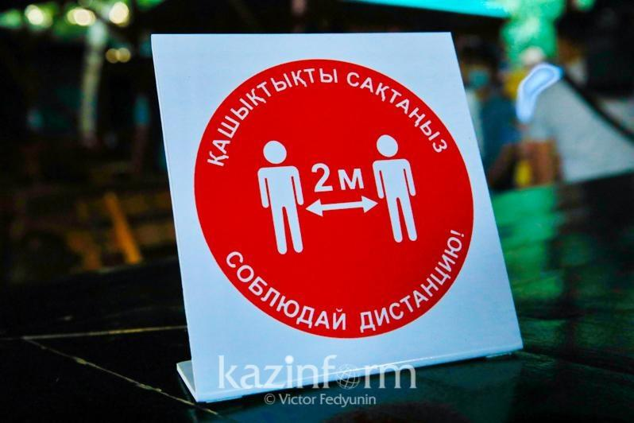
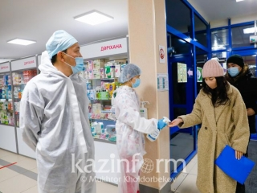
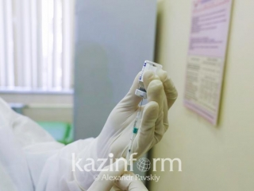
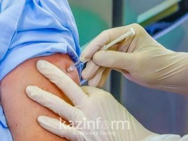
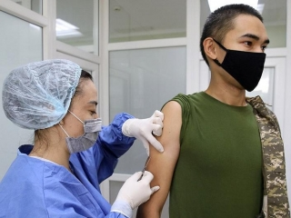

Почему важно соблюдать социальную дистанцию

АЛМАТЫ.КАЗИНФОРМ - Одним из эффективных способов не заболеть коронавирусом - это соблюдать социальное дистанцирование в два метра.О его важности рассказала специалист, передает корреспондент МИА «Казинформ».
Увеличить количество вакцинируемых поручил Аскар Мамин Рост заболеваемости коронавирусом среди школьников отмечают в Минздраве 16 работающих по проекту «Ashyq» объектов в Алматы допустили нарушения
Коронавирус легко передается с микроскопическими каплями при чихании и кашле.Помимо этого, вирус может передаваться при повседневных контактах: при рукопожатии, использовании общих предметов или касании одних и тех же поверхностей.
Поэтому важно соблюдать дистанцию, чтобы замедлить распространение коронавируса и снизить риск заболеть COVID-19, держась на расстоянии не менее 2 метров от других людей.Физическую дистанцию необходимо соблюдать, даже если вы не больны.
При этом надо помнить следующие правила: по возможности оставайтесь дома, воздержитесь от посещения общественных мест: магазинов, спортзалов, кинотеатров и ресторанов, не собирайтесь группами, держитесь на безопасном расстоянии от других пассажиров, регулярно и тщательно мойте руки, особенно после посещения общественных мест.
Заведующая кафедрой клинической фармакологии и доказательной медицины НАО «Медицинский университет Караганды» кандидат медицинских наук, ассоциированный профессор Шолпан Калиева напомнила: чтобы правильно защищаться от коронавируса, необходимо соблюдать три важные правила: носить маски, соблюдать социальное дистанцирование и дезинфицироваться.
Шолпан Калиева ответила, можно ли избежать коронавируса, если ты был в близком контакте с зараженным.
«Вирус очень контагиозный.Это значит, что он очень заразный.Если мы, например, встретились с больным человеком, то надо соблюдать дистанцию в два метра.Проводился такой эксперимент для определения расстояния распространяемости вируса при чихании.Так вот это расстояние составило до 1,5 метра.Но считается, что средняя безопасная дистанция - два метра.Если Вы встретили больного человека и выдерживаете расстояние два метра, при этом он и Вы носите маску, то все-таки заражения избежать можно.Но все еще зависит от индивидуальных обстоятельств.Предположим, если у человека иммунитет снижен, и организм восприимчив к инфекции, то при всех профилактических мероприятиях, можно заразиться», - пояснила она.
Шолпан Калиева также привела собственный пример.
«Я как-то заболела коронавирусной инфекцией и не знала об этом.Контактировала с родными и близкими.После заразились только те люди, которые жили со мной в одной квартире.Те люди, которые контактировали со мной, но держали дистанцию и носили маски, не болели.Хотя мы тоже с ними находились в одной машине и квартире, но держали дистанцию», - заметила она
Ранее руководитель Центра укрепления здоровья Национального центра общественного здоровья МЗ РК Жазира Ембердиева рассказала, что для профилактики болезни необходимо соблюдать санитарные нормы и правильно питаться.
Posted On: 2020-12-21T00:00:00




Content Date: 2020-12-21
Download Date: 2021-04-21
Document ID: L0C04ANHI